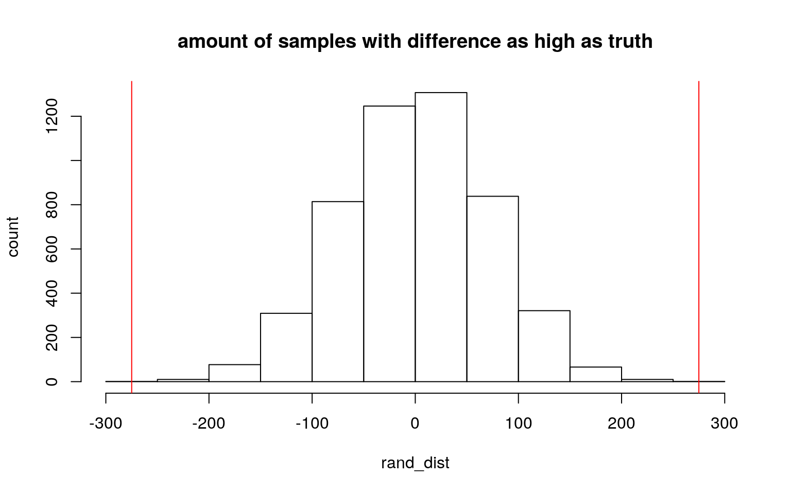
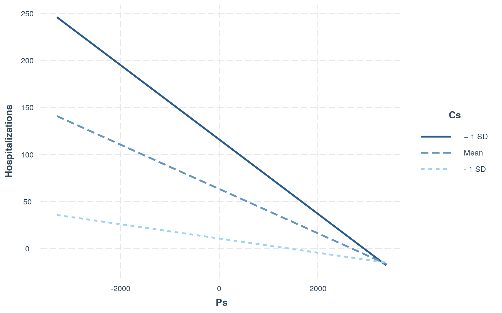
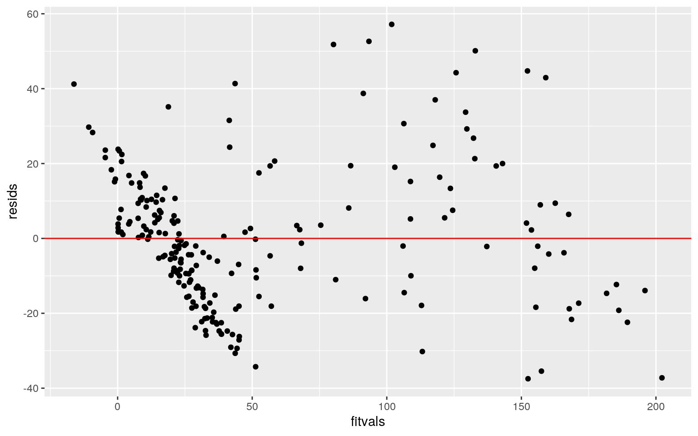
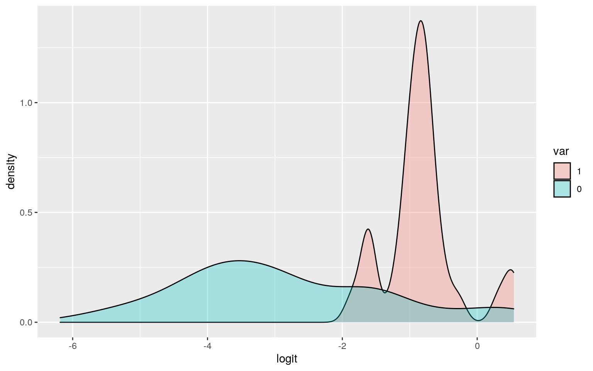
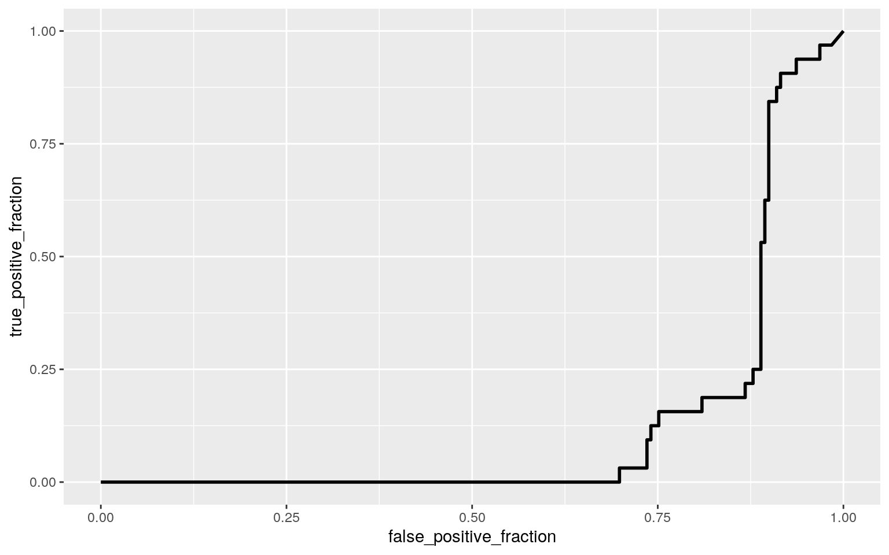

library(tidyverse)
library(lmtest)
library(sandwich)
covid <- read_csv("covid2.csv")
# I will be using the covid dataset for this project. The dataset documants the status of covid
#patients from March 1st to October 7th. This dataset has 221 observations and includes the
#variables Day, Date, Cases, Deaths, hospitalizations, and Death rate. The day and date variables
#are categorical, and provide the day of the week and date of the each recording. The other
#variables are numeric; cases, hospitalizations, and deaths are variables which measure the number
#of cases, deaths and hospitalizations on each day. Death rate measures the proportion of cases
#which resulted in death.man1<-manova(cbind(`People Tested`,Cases,Deaths,Hospitalizations,`death rate`)~Day, data=covid)
summary(man1)## Df Pillai approx F num Df den Df Pr(>F)
## Day 6 0.5333 4.2584 30 1070 4.285e-13 ***
## Residuals 214
## ---
## Signif. codes: 0 '***' 0.001 '**' 0.01 '*' 0.05 '.' 0.1
' ' 1summary.aov(man1)## Response People Tested :
## Df Sum Sq Mean Sq F value Pr(>F)
## Day 6 210760301 35126717 14.41 8.686e-14 ***
## Residuals 214 521657455 2437652
## ---
## Signif. codes: 0 '***' 0.001 '**' 0.01 '*' 0.05 '.' 0.1
' ' 1
##
## Response Cases :
## Df Sum Sq Mean Sq F value Pr(>F)
## Day 6 2692196 448699 6.4141 3.131e-06 ***
## Residuals 214 14970416 69955
## ---
## Signif. codes: 0 '***' 0.001 '**' 0.01 '*' 0.05 '.' 0.1
' ' 1
##
## Response Deaths :
## Df Sum Sq Mean Sq F value Pr(>F)
## Day 6 134 22.384 0.093 0.997
## Residuals 214 51515 240.724
##
## Response Hospitalizations :
## Df Sum Sq Mean Sq F value Pr(>F)
## Day 6 2563 427.1 0.133 0.992
## Residuals 214 687100 3210.7
##
## Response death rate :
## Df Sum Sq Mean Sq F value Pr(>F)
## Day 6 0.0009402 1.5669e-04 3.2084 0.004887 **
## Residuals 214 0.0104513 4.8838e-05
## ---
## Signif. codes: 0 '***' 0.001 '**' 0.01 '*' 0.05 '.' 0.1
' ' 1covid%>%na.omit%>%group_by(Day)%>%summarize(mean(`People Tested`),mean(Cases), mean(`death rate`))## # A tibble: 7 x 4
## Day `mean(\`People Tested\`)` `mean(Cases)`
`mean(\`death rate\`)`
## <chr> <dbl> <dbl> <dbl>
## 1 Friday 3881. 442. 0.00447
## 2 Monday 3909. 446. 0.00421
## 3 Saturday 2130. 244. 0.00685
## 4 Sunday 1448. 171. 0.00988
## 5 Thursday 3656. 446. 0.00388
## 6 Tuesday 4048. 448. 0.00405
## 7 Wednesday 3970. 455. 0.00444pairwise.t.test(covid$`People Tested`, covid$Day, p.adj="none")##
## Pairwise comparisons using t tests with pooled SD
##
## data: covid$`People Tested` and covid$Day
##
## Friday Monday Saturday Sunday Thursday Tuesday
## Monday 0.94316 - - - - -
## Saturday 1.6e-05 1.0e-05 - - - -
## Sunday 3.1e-09 1.6e-09 0.08416 - - -
## Thursday 0.57134 0.52103 0.00016 6.1e-08 - -
## Tuesday 0.67244 0.72306 2.1e-06 2.2e-10 0.32094 -
## Wednesday 0.82245 0.87735 5.2e-06 6.9e-10 0.42685
0.84143
##
## P value adjustment method: nonepairwise.t.test(covid$Cases, covid$Day, p.adj="none")##
## Pairwise comparisons using t tests with pooled SD
##
## data: covid$Cases and covid$Day
##
## Friday Monday Saturday Sunday Thursday Tuesday
## Monday 0.9586 - - - - -
## Saturday 0.0036 0.0028 - - - -
## Sunday 6.5e-05 4.6e-05 0.2716 - - -
## Thursday 0.9507 0.9916 0.0029 5.1e-05 - -
## Tuesday 0.9359 0.9770 0.0026 4.1e-05 0.9856 -
## Wednesday 0.8508 0.8907 0.0018 2.6e-05 0.8999 0.9135
##
## P value adjustment method: nonepairwise.t.test(covid$`death rate`, covid$Day, p.adj="none")##
## Pairwise comparisons using t tests with pooled SD
##
## data: covid$`death rate` and covid$Day
##
## Friday Monday Saturday Sunday Thursday Tuesday
## Monday 0.88305 - - - - -
## Saturday 0.18017 0.13443 - - - -
## Sunday 0.00239 0.00136 0.08724 - - -
## Thursday 0.73997 0.85131 0.09501 0.00078 - -
## Tuesday 0.81175 0.92686 0.11248 0.00099 0.92322 -
## Wednesday 0.98698 0.89511 0.17163 0.00210 0.75033
0.82304
##
## P value adjustment method: none5.055e-07 + 1.466e-06 + 2.88e-15 + 2.287e-12## [1] 1.971502e-06#I have performed 1 MANOVA, 5 ANOVAs, and 3 sets of 21 t-tests, resulting in 69 total tests.
#The overall probability of type 1 error is 1.971502e-06.
0.05/69## [1] 0.0007246377#The boniferroni-corrected significance level is 0.0007462687. Based on this, significant
#differences were shown between sunday and all other days except saturday for death rate and cases,
#while being significant between saturday and sunday and the other days for people tested.
library(rstatix)
covid1<-na.omit(covid)
group <- covid1$Day
DVs <- covid %>% na.omit %>% select(`People Tested`,Cases,`death rate`)
#Test multivariate normality for each group (null: assumption met)
sapply(split(DVs,group), mshapiro_test)## Friday Monday Saturday Sunday Thursday Tuesday Wednesday
## statistic 0.8826157 0.8633695 0.8409878 0.9155795
0.7414964 0.8608538 0.7812326
## p.value 0.002727873 0.0008194977 0.0003275623 0.01580323
5.062044e-06 0.0007193995 1.844803e-05#If any p<.05, stop (assumption violated). If not, test homogeneity of covariance matrices
#Box's M test (null: assumption met)
box_m(DVs, group)## # A tibble: 1 x 4
## statistic p.value parameter method
## <dbl> <dbl> <dbl> <chr>
## 1 247. 2.90e-33 36 Box's M-test for Homogeneity of
Covariance Matrices#Optionally, view covariance matrices for each group
lapply(split(DVs,group), cov)## $Friday
## People Tested Cases death rate
## People Tested 2.919988e+06 1.134034e+05 -2.549536e+00
## Cases 1.134034e+05 8.012343e+04 1.087871e+00
## death rate -2.549536e+00 1.087871e+00 3.084179e-05
##
## $Monday
## People Tested Cases death rate
## People Tested 4251645.51210 1.660324e+05 -4.206160e+00
## Cases 166032.36895 9.377120e+04 8.798568e-01
## death rate -4.20616 8.798568e-01 2.665367e-05
##
## $Saturday
## People Tested Cases death rate
## People Tested 774794.294624 34061.561290 -1.053703e+00
## Cases 34061.561290 30517.561290 1.117626e+00
## death rate -1.053703 1.117626 6.591985e-05
##
## $Sunday
## People Tested Cases death rate
## People Tested 3.436292e+05 11235.112903 -0.7621183685
## Cases 1.123511e+04 16362.337702 1.2863558210
## death rate -7.621184e-01 1.286356 0.0001367003
##
## $Thursday
## People Tested Cases death rate
## People Tested 2.321795e+06 1.058776e+05 -1.516195e+00
## Cases 1.058776e+05 1.030494e+05 1.016421e+00
## death rate -1.516195e+00 1.016421e+00 2.210152e-05
##
## $Tuesday
## People Tested Cases death rate
## People Tested 3.341635e+06 1.147137e+05 -3.136792e+00
## Cases 1.147137e+05 9.103980e+04 1.113001e+00
## death rate -3.136792e+00 1.113001e+00 2.785137e-05
##
## $Wednesday
## People Tested Cases death rate
## People Tested 3.068256e+06 9.576168e+04 -3.542157e+00
## Cases 9.576168e+04 7.494613e+04 9.467025e-01
## death rate -3.542157e+00 9.467025e-01 3.090599e-05# MANOVA assumptions are not likely to be met since the number of testings changed over the course
#of the year and not as much within each week on a regular basis.mean(covid$Cases[covid$Day=="Monday"])-mean(covid$Cases[covid$Day=="Sunday"])## [1] 274.9375#Ho: the mean difference in cases found between sundays and mondays is 0.
#Ha: the mean difference in cases found between sundays and mondays is not 0.
rand_dist<-vector()
for(i in 1:5000){
new<-data.frame(time=sample(covid$Cases),condition=covid$Day)
rand_dist[i]<-mean(new$time[new$condition=="Sunday"])-
mean(new$time[new$condition=="Monday"])}
mean(rand_dist>274.9375 | rand_dist < -274.9375)## [1] 4e-04#The p-value was 0, so we reject the null hypothesis; there is a true mean difference between sunday and monday.
{hist(rand_dist,main="amount of samples with difference as high as truth",ylab="count"); abline(v = c(-274.9375, 274.9375),col="red")}
#The bounds are outside the scope of the histogram, showing how significant our result is.covid$Ps <- covid$`People Tested`-mean(covid$`People Tested`, na.rm=T)
covid$Cs <- covid$Cases-mean(covid$Cases, na.rm=T)
reg <- lm(Hospitalizations~Ps*Cs, data = covid)
summary(reg)##
## Call:
## lm(formula = Hospitalizations ~ Ps * Cs, data = covid)
##
## Residuals:
## Min 1Q Median 3Q Max
## -37.476 -13.153 -1.442 10.108 57.174
##
## Coefficients:
## Estimate Std. Error t value Pr(>|t|)
## (Intercept) 6.340e+01 1.411e+00 44.94 <2e-16 ***
## Ps -2.356e-02 8.126e-04 -28.99 <2e-16 ***
## Cs 1.858e-01 4.796e-03 38.75 <2e-16 ***
## Ps:Cs -5.639e-05 3.362e-06 -16.77 <2e-16 ***
## ---
## Signif. codes: 0 '***' 0.001 '**' 0.01 '*' 0.05 '.' 0.1
' ' 1
##
## Residual standard error: 18.55 on 217 degrees of freedom
## Multiple R-squared: 0.8918, Adjusted R-squared: 0.8903
## F-statistic: 596.1 on 3 and 217 DF, p-value: < 2.2e-16#For each person tested, when cases are constant, hospitalizations decrease by 2.356e-02. For each
#Case recorded, for the same number of people tested, hospitalizations increase by 1.858e-01. When
#cases and people tested increase by 1, the number of hospitalizations decreases by 5.639e-05 in
#addition to the previous effects.
library(interactions)
interact_plot(reg, pred = Ps, modx = Cs)
resids<-reg$residuals
fitvals<-reg$fitted.values
ggplot()+geom_point(aes(fitvals,resids))+geom_hline(yintercept=0, color='red')
shapiro.test(resids)##
## Shapiro-Wilk normality test
##
## data: resids
## W = 0.97419, p-value = 0.000451#The regression is homoskedastic but not linear or normal.
coeftest(reg, vcov=vcovHC(reg))##
## t test of coefficients:
##
## Estimate Std. Error t value Pr(>|t|)
## (Intercept) 6.3397e+01 1.6316e+00 38.856 < 2.2e-16 ***
## Ps -2.3560e-02 1.0724e-03 -21.969 < 2.2e-16 ***
## Cs 1.8582e-01 5.3736e-03 34.581 < 2.2e-16 ***
## Ps:Cs -5.6387e-05 4.0581e-06 -13.895 < 2.2e-16 ***
## ---
## Signif. codes: 0 '***' 0.001 '**' 0.01 '*' 0.05 '.' 0.1
' ' 1#After recomputation, both predictors and their interaction have significant effects on
#Hospitalizations(p<2.2e-16). No SEs changed significantly.
summary(reg)$r.squared## [1] 0.8917865#People tested and cases account for 89.18% of variation in hospitalizations.samp_distn<-replicate(5000, {
boot_dat <- sample_frac(covid, replace=T)
fit <- lm(Hospitalizations~Ps*Cs, data=boot_dat)
coef(fit)
})
samp_distn %>% t %>% as.data.frame %>% summarize_all(sd)## (Intercept) Ps Cs Ps:Cs
## 1 1.618956 0.001047995 0.005230995 3.957548e-06#The SEs are on the same scale as those for the standard and robust models, but are smaller.covid <- covid%>% na.omit()
covid$var <- ifelse(covid$Day=="Sunday",1,0)
fit<-glm(var~Cases+`People Tested`,data=covid,family="binomial")
summary(fit)##
## Call:
## glm(formula = var ~ Cases + `People Tested`, family =
"binomial",
## data = covid)
##
## Deviance Residuals:
## Min 1Q Median 3Q Max
## -1.4119 -0.4986 -0.2491 -0.1470 2.0027
##
## Coefficients:
## Estimate Std. Error z value Pr(>|z|)
## (Intercept) 0.5416722 0.3831081 1.414 0.157395
## Cases -0.0029034 0.0013993 -2.075 0.038003 *
## `People Tested` -0.0006111 0.0001729 -3.533 0.000411 ***
## ---
## Signif. codes: 0 '***' 0.001 '**' 0.01 '*' 0.05 '.' 0.1
' ' 1
##
## (Dispersion parameter for binomial family taken to be 1)
##
## Null deviance: 182.80 on 220 degrees of freedom
## Residual deviance: 135.04 on 218 degrees of freedom
## AIC: 141.04
##
## Number of Fisher Scoring iterations: 6# On Sundays, there is e^0.0029034 lower odds of people being tested and e^0.0006111 lower odds of
#a case being recorded.
prob<-predict(fit,type="response")
pred<-ifelse(prob>0.5,1,0)
table(prediction=pred, truth=covid$var)%>%addmargins## truth
## prediction 0 1 Sum
## 0 176 29 205
## 1 13 3 16
## Sum 189 32 221(176+3)/221## [1] 0.80995483/32## [1] 0.09375176/189## [1] 0.93121693/16## [1] 0.1875library(plotROC)
ROCplot3<-ggplot(covid)+geom_roc(aes(d=var,m=Cases*`People Tested`), n.cuts=0)
calc_auc(ROCplot3)## PANEL group AUC
## 1 1 -1 0.1275628#The accuracy is 0.8099548, sensitivity is 0.09375, specificity is 0.9312169, precision is 0.1875,
#and AUC is 0.1275628
odds<-function(p)p/(1-p)
p<-seq(0,1,by=.05)
logit<-function(p)log(odds(p))
covid$logit<-predict(fit)
covid2<-covid %>% mutate(var=factor(var,levels=c(1,0)))
covid2 %>% ggplot(aes(logit, fill=var))+geom_density(alpha=.3)
ROCplot3 
calc_auc(ROCplot3)## PANEL group AUC
## 1 1 -1 0.1275628#The AUC is 0.1275628, which indicates that the model is performing very poorly for overall prediction.library(glmnet)
covid2<-covid[-1][-1]
qfit <- glm(var~., data = covid2, family = binomial)
class_diag<-function(probs,truth){
tab<-table(factor(probs>.5,levels=c("FALSE","TRUE")),truth)
acc=sum(diag(tab))/sum(tab)
sens=tab[2,2]/colSums(tab)[2]
spec=tab[1,1]/colSums(tab)[1]
ppv=tab[2,2]/rowSums(tab)[2]
f1=2*(sens*ppv)/(sens+ppv)
if(is.numeric(truth)==FALSE & is.logical(truth)==FALSE){
truth<-as.numeric(truth)-1}
#CALCULATE EXACT AUC
ord<-order(probs, decreasing=TRUE)
probs <- probs[ord]; truth <- truth[ord]
TPR=cumsum(truth)/max(1,sum(truth))
FPR=cumsum(!truth)/max(1,sum(!truth))
dup<-c(probs[-1]>=probs[-length(probs)], FALSE)
TPR<-c(0,TPR[!dup],1); FPR<-c(0,FPR[!dup],1)
n <- length(TPR)
auc<- sum( ((TPR[-1]+TPR[-n])/2) * (FPR[-1]-FPR[-n]) )
data.frame(acc,sens,spec,ppv,f1,auc)
}
prob <- predict(qfit, type = "response")
class_diag(prob, covid2$var)## acc sens spec ppv f1 auc
## 1 0.8733032 0.34375 0.962963 0.6111111 0.44 0.9231151#The accuracy is 0.8571429, sensitivity is 0.34375 , specificity is 0.962963, Precision is 0.6111111, and auc is 0.9231151. This indicates that the model is a very good predictor of y.
set.seed(1234)
k=10
data <- covid2[sample(nrow(covid2)), ]
folds <- cut(seq(1:nrow(covid2)), breaks = k, labels = F)
diags <- NULL
for (i in 1:k) {
train <- data[folds != i, ]
test <- data[folds == i, ]
truth <- test$var
fit <- glm(var ~ -1, data = train, family = "binomial")
probs <- predict(fit, newdata = test, type = "response")
diags <- rbind(diags, class_diag(probs, truth))
}
summarize_all(diags, mean)## acc sens spec ppv f1 auc
## 1 0.8547431 0 1 NaN NaN 0.5# The auc is significantly lower in this model, so this is a poor predictor of y.
library(glmnet)
var<- as.matrix(covid2$var)
cov_preds <- model.matrix(var ~ ., data = covid2)[,-1]
cross <- cv.glmnet(cov_preds, var, family = "binomial")
lasso_fit <- glmnet(cov_preds, var, family = "binomial", lambda = cross$lamda.1se)
coef(lasso_fit)## 9 x 75 sparse Matrix of class "dgCMatrix"
##
## (Intercept) -1.776011 -1.60367458 -1.4542249 -1.323055
-1.2068115 -1.1029838 -1.0178528
## `People Tested` . . . . . . .
## Cases . . . . . . .
## Deaths . . . . . . .
## Hospitalizations . . . . . . .
## `death rate` . . . . . . 1.5666388
## Ps . . . . . . .
## Cs . . . . . . .
## logit . 0.06875858 0.1314229 0.189080 0.2425131
0.2923005 0.3390875
##
## (Intercept) -0.9767998 -0.9388747 -0.9038283 -0.8714312
-0.8414759 -0.8137739 -0.7881547
## `People Tested` . . . . . . .
## Cases . . . . . . .
## Deaths . . . . . . .
## Hospitalizations . . . . . . .
## `death rate` 9.6528269 16.6828803 22.9186349 28.5366608
33.6600087 38.3767563 42.7513317
## Ps . . . . . . .
## Cs . . . . . . .
## logit 0.3842552 0.4273684 0.4686929 0.5084166 0.5466725
0.5835550 0.6191298
##
## (Intercept) -0.7644625 -7.420788e-01 -0.8329404224
-0.9341261055 -1.0416343660 -1.1547661029
## `People Tested` . . . . . .
## Cases . -2.275671e-05 -0.0001799897 -0.0003313523
-0.0004740916 -0.0006081207
## Deaths . . . . . .
## Hospitalizations . . . . . .
## `death rate` 46.8317403 5.087110e+01 59.0580715136
67.1809359813 75.1480505301 82.9676474531
## Ps . . . . . .
## Cs . . -0.0003256376 -0.0006804933 -0.0010529146
-0.0014403653
## logit 0.6534423 6.838151e-01 0.6601031244 0.6341675607
0.6077236028 0.5809572921
##
## (Intercept) -1.2734997108 -1.3970322607 -1.524285597
-1.655126591 -1.788588764
## `People Tested` . . . . .
## Cases -0.0007333191 -0.0008497795 -0.000958022
-0.001058330 -0.001151065
## Deaths . . . . .
## Hospitalizations . . . . .
## `death rate` 90.6582450261 98.2160156268 105.630829813
112.911699106 120.045594707
## Ps . . . . .
## Cs -0.0018422581 -0.0022559219 -0.002678014 -0.003107926
-0.003542779
## logit 0.5538167310 0.5264621617 0.499076188 0.471579540
0.444139893
##
## (Intercept) -1.922941482 -1.990715e+00 -2.058220703
-2.130111198 -2.205680771
## `People Tested` . . . . .
## Cases -0.001238879 -1.321223e-03 -0.001397933
-0.001469244 -0.001535375
## Deaths . . . . .
## Hospitalizations . -5.244459e-04 -0.001057552
-0.001555974 -0.002021257
## `death rate` 127.020371033 1.345846e+02 141.993492210
149.171069720 156.113433087
## Ps . . . . .
## Cs -0.003977740 -4.230346e-03 -0.004478994 -0.004736437
-0.005000848
## logit 0.416888899 4.038882e-01 0.391056400 0.377464859
0.363240585
##
## (Intercept) -2.283259520 -2.361602646 -2.439703934
-2.519006308 -2.597504924
## `People Tested` . . . . .
## Cases -0.001596832 -0.001654391 -0.001709474
-0.001761274 -0.001809641
## Deaths . . . . .
## Hospitalizations -0.002460397 -0.002875817 -0.003267897
-0.003637081 -0.003988589
## `death rate` 162.821112290 169.282759916 175.486584461
181.492689025 187.262622960
## Ps . . . . .
## Cs -0.005267800 -0.005533877 -0.005796280 -0.006060025
-0.006319096
## logit 0.348709760 0.334050354 0.319296134 0.304402443
0.289702897
##
## (Intercept) -2.674790694 -2.751916857 -2.827717137
-2.901605684 -2.973219229
## `People Tested` . . . . .
## Cases -0.001850068 -0.001888167 -0.001923608
-0.001956513 -0.001987036
## Deaths . . . . .
## Hospitalizations -0.004324263 -0.004643059 -0.004943007
-0.005225930 -0.005492925
## `death rate` 192.749676184 198.045541580 203.106302134
207.929936084 212.517352487
## Ps . . . . .
## Cs -0.006571775 -0.006822294 -0.007067027 -0.007304410
-0.007533517
## logit 0.275636006 0.261554976 0.247718041 0.234241419
0.221192905
##
## (Intercept) -3.041356898 -3.106364969 -3.168298745
-3.227145438 -3.279421801
## `People Tested` . . . . .
## Cases -0.002015453 -0.002042000 -0.002066847
-0.002090128 -0.002105154
## Deaths . . . . -0.003181258
## Hospitalizations -0.005749132 -0.005992303 -0.006221977
-0.006438271 -0.006825929
## `death rate` 216.867276822 220.984227886 224.872786114
228.537998857 237.034964323
## Ps . . . . .
## Cs -0.007751071 -0.007958132 -0.008154944 -0.008341554
-0.008510785
## logit 0.208807554 0.196996063 0.185739074 0.175034755
0.157778596
##
## (Intercept) -3.308800686 -3.318865728 -3.323806294
-3.328556344 -3.334338925
## `People Tested` . . . . .
## Cases -0.002114348 -0.002110977 -0.002106178
-0.002103477 -0.002102697
## Deaths -0.007767195 -0.012282434 -0.016480691
-0.020398704 -0.024038270
## Hospitalizations -0.007430715 -0.008127611 -0.008816244
-0.009462341 -0.010060096
## `death rate` 247.739607527 258.133523139 267.879563136
277.034331368 285.601035675
## Ps . . . . .
## Cs -0.008615363 -0.008663843 -0.008696602 -0.008727734
-0.008760724
## logit 0.141320029 0.130109549 0.120829398 0.112110093
0.103694298
##
## (Intercept) -3.339454154 -3.344852503 -3.350635830
-3.356440780 -3.362320409
## `People Tested` . . . . .
## Cases -0.002101332 -0.002099458 -0.002099920
-0.002099858 -0.002099402
## Deaths -0.027538416 -0.030794604 -0.033822036
-0.036668248 -0.039324655
## Hospitalizations -0.010635163 -0.011172093 -0.011673146
-0.012138979 -0.012573888
## `death rate` 293.820853220 301.501819715 308.701482742
315.458189093 321.778506756
## Ps . . . . .
## Cs -0.008790806 -0.008820580 -0.008850677 -0.008879818
-0.008908254
## logit 0.095730202 0.088314578 0.081096820 0.074345131
0.068007740
##
## (Intercept) -3.367827064 -3.373273227 -3.378843362
-3.384447789 -3.389991880
## `People Tested` . . . . .
## Cases -0.002098725 -0.002097815 -0.002096709
-0.002095425 -0.002093985
## Deaths -0.041844864 -0.044157850 -0.046300066
-0.048286128 -0.050125994
## Hospitalizations -0.012986658 -0.013366921 -0.013718434
-0.014043648 -0.014344470
## `death rate` 327.768435355 333.288937682 338.414042753
343.174224866 347.590820807
## Ps . . . . .
## Cs -0.008934856 -0.008960424 -0.008985566 -0.009010087
-0.009033765
## logit 0.062008896 0.056496987 0.051326575 0.046477427
0.041944094
##
## (Intercept) -3.395408261 -3.400652651 -3.405696941
-3.410524152 -3.415125114
## `People Tested` . . . . .
## Cases -0.002092407 -0.002090711 -0.002088916
-0.002087040 -0.002085097
## Deaths -0.051828447 -0.053401828 -0.054854175
-0.056193225 -0.057426390
## Hospitalizations -0.014622544 -0.014879368 -0.015116337
-0.015334765 -0.015535892
## `death rate` 351.683117018 355.469761733 358.968958558
362.198407679 365.175210066
## Ps . . . . .
## Cs -0.009056453 -0.009078068 -0.009098569 -0.009117945
-0.009136207
## logit 0.037719181 0.033792092 0.030150029 0.026778951
0.023664246
##
## (Intercept) -3.419496227 -3.423637879 -3.427553251
-3.431247368 -3.434726282
## `People Tested` . . . . .
## Cases -0.002083103 -0.002081070 -0.002079011
-0.002076936 -0.002074858
## Deaths -0.058560736 -0.059602965 -0.060559402
-0.061435988 -0.062238271
## Hospitalizations -0.015720889 -0.015890859 -0.016046838
-0.016189793 -0.016320628
## `death rate` 367.915781293 370.435782727 372.750068988
374.872648793 376.816656120
## Ps . . . . .
## Cs -0.009153379 -0.009169492 -0.009184585 -0.009198702
-0.009211884
## logit 0.020791176 0.018145183 0.015712105 0.013478333
0.011430937
##
## (Intercept) -3.437996347 -3.441063504 -3.443932541
-3.446736151 -3.449393804
## `People Tested` . . . . .
## Cases -0.002072789 -0.002070739 -0.002068724
-0.002066734 -0.002059424
## Deaths -0.062971408 -0.063640162 -0.064248904
-0.064844263 -0.065334326
## Hospitalizations -0.016440176 -0.016549207 -0.016648421
-0.016744723 -0.016818972
## `death rate` 378.594328754 380.216991515 381.695041754
383.132355306 384.245627736
## Ps . . . . .
## Cs -0.009224174 -0.009235610 -0.009246227 -0.009256551
-0.009265115
## logit 0.009557763 0.007847519 0.006289853 0.004743501
0.003846809#The most consistently significant predictors of y were people tested, cases, and death rate, so
#I will use these in my 10-fold cv. These were the same varibles which were significant in the
#MANOVA.
set.seed(1234)
k=10
data <- covid2 %>% sample_frac
folds <- ntile(1:nrow(covid2),n=10)
diags <- NULL
for (i in 1:k) {
train <- data[folds != i, ]
test <- data[folds == i, ]
truth <- test$var
fit3 <- glm(var ~ Cases*Hospitalizations*`People Tested`, data = train, family = "binomial")
probs3 <- predict(fit3, newdata = test, type = "response")
diags <- rbind(diags, class_diag(probs3, truth))
}
diags%>%summarize_all(mean)## acc sens spec ppv f1 auc
## 1 0.8648221 0.5375 0.9201299 NaN NaN 0.9229257#The AUC is slightly lower using LASSO variables than when using all variables.